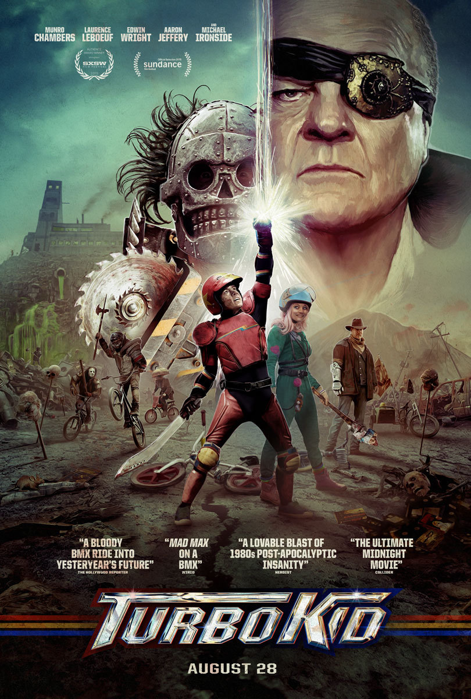

Turbo Kid

Rating | NR
Runtime | 1h 35m
Release Date | 08.28.2015
Writers | Anouk Whissell, François Simard, Yoann-Karl Whissell
Directors | Anouk Whissell, François Simard, Yoann-Karl Whissell
Plot | In a post-apocalyptic wasteland, an orphaned teen must battle a ruthless warlord to save the girl of his dreams.